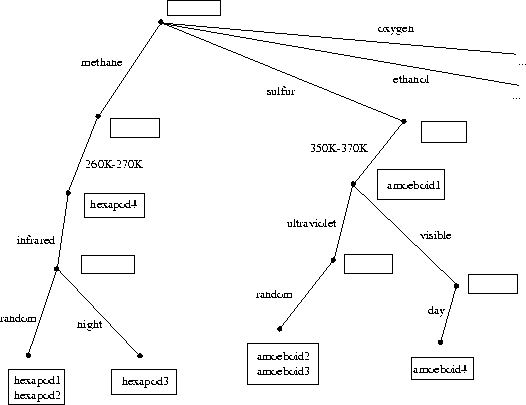

Each incoming freshthing has preferences for his/her/its living space. For example, the atmosphere should have the correct composition and the temperature range should be correct. There are other kinds of preferences, such as the desirable spectral range of electromagnetic radiation in which the freshthing sees, and the diurnal phase that is appropriate for its work or study.
Some kinds of preferences are more important than others. For example, having a roommate who prefers to be awake when you are asleep is merely annoying, but having to room with someone who breathes an atmosphere that is poisonous to you would be rather more problematic. We will therefore organize the preferences into categories and specify an order of importance to the categories. Every freshthing will pick housing preferences in each category. The categories, in order of importance, and the initial possible choices are:
When a new freshthing interacts with the Housing Office, he/she/it indicates preferences for items in this list. A freshthing may list as many preferences as it wishes, but it may not list a preference in a category without listing preferences in all the categories that are more important. For example, it might list (methane, 260K-270K, infrared, random), or (oxygen, 290K-300K, visible), or (sulfur, 350K-370K, ultraviolet). But it may not list (sulfur, ultraviolet), because that skips temperature, which is more important than spectrum.
Our goal is to implement a system that will take all the preferences from the incoming class, group together those students with similar needs, then use the results to figure out which students to group together and how much reconstruction of Random Hall will be required to convert rooms to the appropriate environments.
In order to keep track of the preferences, we will use a data structure called an association table. Such a table associates a sequence of keys with a list of values. In our application, the sequence of keys will be the preferences specified, and the list of values will the the list of freshthings who specified exactly those preferences.
We can regard such a table as a tree, as shown in figure 1. Each node of the tree (indicated by black dots in the figure) designates a list of values (indicated by boxes in the figure). The key sequence to access any of the lists of values in the tree are the labels on the edges of the tree as we move from the root to the appropriate node.
For example, in figure 1, if we follow the sequence of keys (methane, 260K-270K), we find that the freshthing named Hexapod4 requires a methane atmosphere and a temperature range of of 260K-270K. If we extend the key sequence to be (methane, p260K-270K, infrared), there is no freshthing who has exactly that set of preferences (as represented by the empty box). But if we extend the sequence further to be (methane, 260K-270K, infrared, random), we find that these are the preferences for Hexapod1 and Hexapod2. Similarly, we can examine the branch for freshthings who require a sulfur atmosphere, or oxygen, or ethanol. Note the empty box at the top of the tree, which signifies that there are no freshthings who have expressed no preferences (although expressing no preferences would be an OK thing to do).

Figure 1: Freshthing housing preferences, viewed as a tree structure
We will represent tables using list structure. A table is a list whose first element is the list of values at the node at the top of the table and whose remaining elements are the branches emanating from that node. To make an empty table, we use empty lists for the keys and the branches:
(define (make-table values list-of-branches) (cons values list-of-branches)) (define table-values car) (define table-branches cdr) (define (make-empty-table) (make-table '() '()))
A branch is a pair consisting of a key (the label on the branch) and a subtable (the node that the branch connects to):
(define (make-branch key subtable) (cons key subtable)) (define branch-key car) (define branch-subtable cdr)
The essential building block in our system is a method for adding a new value to a table, associating it with a specified sequence of keys:
(define (add-to-table val table keys)
(if (null? keys)
;; keys ran out so insert new value here.
(make-table (cons val (table-values table))
(table-branches table))
;; more keys to go, so descend deeper into tree.
(make-table (table-values table)
(insert-in-branches val
(table-branches table)
keys))))
The subprocedure insert-in-branches checks the list of branches to find the one with the right key (i.e., the first key in the sequence), and adds the value to the structure for that branch:
;; Assumes there is at least one key
;; Search the branches looking for a match on the first key.
;; Return the new list of branches with the appropriate subtable augmented.
(define (insert-in-branches val branches keys)
(cond ((null? branches)
;; Make a new list with one new branch.
(list
(make-branch (car keys)
(add-to-table val
(make-empty-table)
(cdr keys)))))
((eq? (car keys) (branch-key (car branches)))
;; found the right branch to augment: Add the value to
;; the subtable for that branch
(cons
(make-branch (branch-key (car branches))
(add-to-table val
(branch-subtable (car branches))
(cdr keys)))
(cdr branches)))
(else (cons (car branches)
(insert-in-branches val (cdr branches) keys)))))
Notice the (tricky!) intertwined recursive structure here: add-to-table calls insert-in-branches to insert the element into the appropriate branch; insert-in-branches calls add-to-table to insert the element into the subtable for the appropriate branch.
The following procedure begins with a list of freshthings and their preferences (assumed in correct order and not skipping any) and builds up an association table, installing the freshthings one by one:
(define (install table things)
;; things is a list of freshthings
;; each is a list of name and a list of attributes
(cond ((null? things)
table)
(else
(install (add-to-table (car (car things))
table
(cadr (car things)))
(cdr things)))))
For example, our initial galactic entering class of 1998 might be:
(define entering-class
(install (make-empty-table)
'((hexapod1 (methane 260K-270K infrared random))
(hexapod2 (methane 260K-270K infrared random))
(hexapod3 (methane 260K-270K infrared night))
(hexapod4 (methane 260K-270K))
(amoeboid1 (sulfur 350K-370K))
(amoeboid2 (sulfur 350K-370K ultraviolet random))
(amoeboid3 (sulfur 350K-370K ultraviolet random))
(amoeboid4 (sulfur 350K-370K visible day))
(gnork (ethanol 290K-300K))
(gnorkette (ethanol 290K-300K ultraviolet))
(snork (ethanol 290k-300k))
(tork (ethanol 260K-270K))
(bork (ethanol 260K-270K))
(fred (oxygen 290K-300K visible))
(mary (oxygen 290K-300K visible day))
(mike (oxygen 290K-300K)))))
The resulting structure, printed as a list is:
(()
(methane ()
(260k-270k (hexapod4)
(infrared ()
(random (hexapod2 hexapod1))
(night (hexapod3)))))
(sulfur ()
(350k-370k (amoeboid1)
(ultraviolet ()
(random (amoeboid3 amoeboid2)))
(visible ()
(day (amoeboid4)))))
(ethanol ()
(290k-300k (snork gnork)
(ultraviolet (gnorkette)))
(260k-270k (bork tork)))
(oxygen ()
(290k-300k (mike)
(visible (fred)
(day (mary))))))
This is in fact the table shown in figure 1, with the branches for the ethanol and oxygen breathers included.